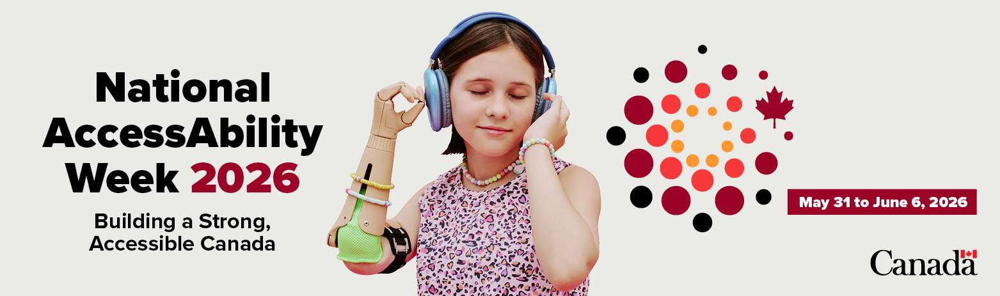

Events (Internal only)
Join us for engaging accessibility awareness sessions, workshops, and webinars designed to deepen your understanding of inclusive design. Explore upcoming events to enhance your accessibility knowledge.

Past Events
In-Person Kiosk hosted by the IT Accessibility Office (ITAO) – Meet Us at the National AccessAbility Awareness Week
- Date: May 26, 2026
- Time: Drop in between 8:00 AM – 2:00 PM
- Location: Place du Portage, Phase IV – 1st Floor | 140 Promenade du Portage (top of the escalators)
- Add the invitation to your Outlook calendar by downloading : In-Person Kiosk – NAAW iCalendar Invitation.ics and then save.
Join Us! Come explore adaptive & assistive technology LIVE, see and touch the tools, ask the questions, and discover what's possible for every employee.
We Are Here for Every Question!
Our team of experts will be on-site to answer all your questions related to the use of adaptive hardware and assistive software.
- Please contact the ACE-CEA team (ACE-CEA@hrsdc-rhdcc.gc.ca)
- General Inquiries: contact IT Accessibility (edsc.ti-it.a11y.esdc@hrsdc-rhdcc.gc.ca)
Celebrate Global Accessibility Awareness Day (GAAD)
Discover Digital Accessibility in Action
Join the IT Accessibility Office on May 19, 2026 (GAAD Outlook invitation for more details) for an accessibility experience you won't forget.
- Take on the 5 Minute Keyboard Only Challenge.
- Watch live screen reader demonstrations on the big screen.
- Discover adaptive technologies available to ESDC employees.
- Test your skills, spot digital barriers, and see how small design choices make a big difference.
Learn something new, have fun, and experience accessibility in action!
- Drop in anytime between 11:00 a.m. and 2:00 p.m. (ET).
- Add it to your calendar by selecting “Open with Desktop app” or downloading the GAAD Outlook invitation.
Can't join in person? No problem!
Remote participants will be able to use the ITAO's hands-on materials to test their knowledge.
- Identify accessibility issues in Outlook and Word
- Navigate the iService web page using keyboard only
- Explore page reading order using the Tab key and arrow keys